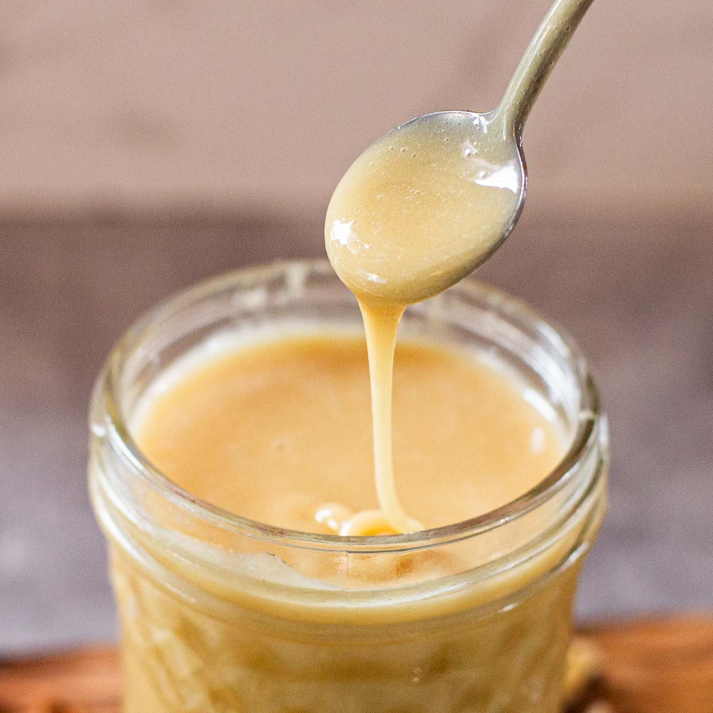

Search for a Recipe:
Our favourate recipes
Ugandan Rolex

Ingredients:
- Eggs
- Chapati
- Vegetables
- Spices
steps
- Scramble eggs with vegetables, spices, and a bit of salt and chili
- Pour the egg mixture onto a griddle
- Press a chapati against the egg mixture
- Peel the chapati and egg from the griddle
- Add tomato slices and more salt
- Roll the chapati and egg into a cylinder
- Serve in a paper wrapper, plastic bag, or on a plate
Pineapple juice

Ingredients:
- 1/2 ripe pineapple
- 1/2 cup water
- Ice cubes
- Pinch of salt
- black pepper
steps
- Wash and peel the pineapple
- Cut the pineapple into pieces
- Add the pineapple and water to a blender
- Blend until smooth
- Strain the mixture through a fine mesh strainer into a bowl
- Press the pulp with a spatula to extract more juice
- Discard the remaining pulp
Creamed honey

Ingredients:
- Liquid honey
- Seed honey
- Cinnamon
- Vanilla extract
- RoseMary Herbs
steps
- Prepare the honey
- Mix in a stand mixer
- Add seed honey
- Whip until creamy
- Once the desired consistency is reached, immediately transfer the creamed honey into clean jars and store at room temperature.
- Please note that Ratio generally, use a 1:10 ratio of seed honey to liquid honey
- Note that Regularly scrape the sides of the mixing bowl to prevent honey from sticking